Semantic placement and request recovery
Actual development application; synthetic unpaid provider. 6c892c682ea5b1b60e9bf0e8c800ac950ef64507
checks-parallax-semantic-assistan-2da52-ferences-in-both-directions-chromium-video.webm
checks-parallax-semantic-assistan-aae51--identity-and-saved-restore-chromium-video.webm
checks-parallax-semantic-assistan-b84a4--without-changing-the-scene-chromium-video.webm
semantic-ambiguous-target-question.png
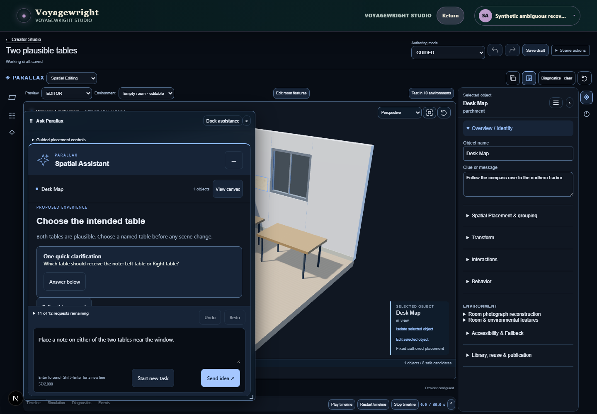
semantic-applied-renderer-confirmation.png
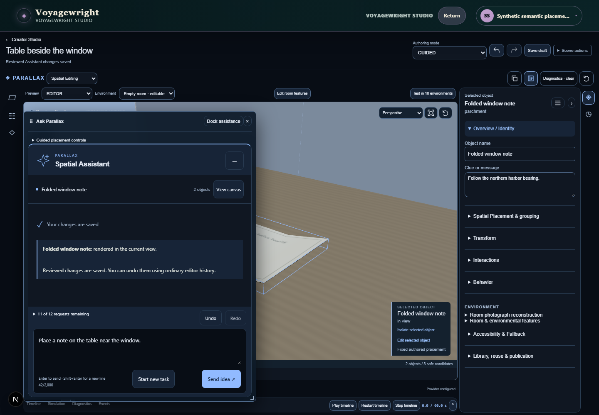
semantic-cancellable-request.png
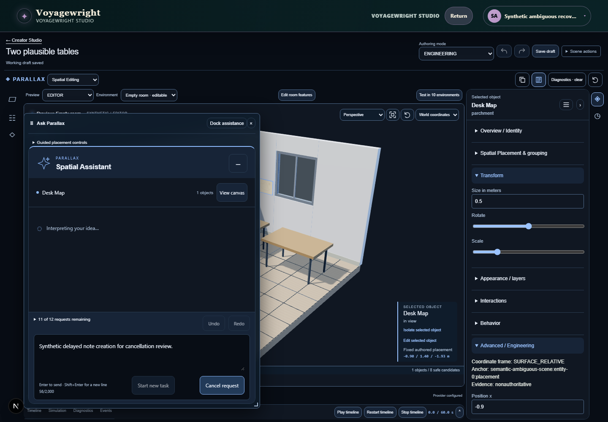
semantic-cancelled.png
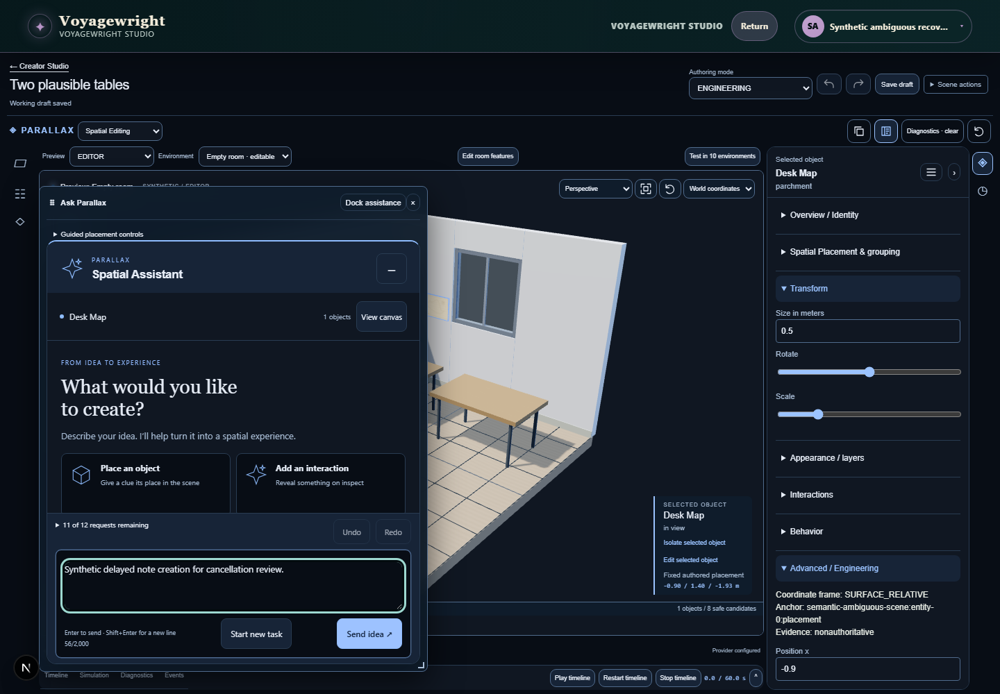
semantic-interpreting.png
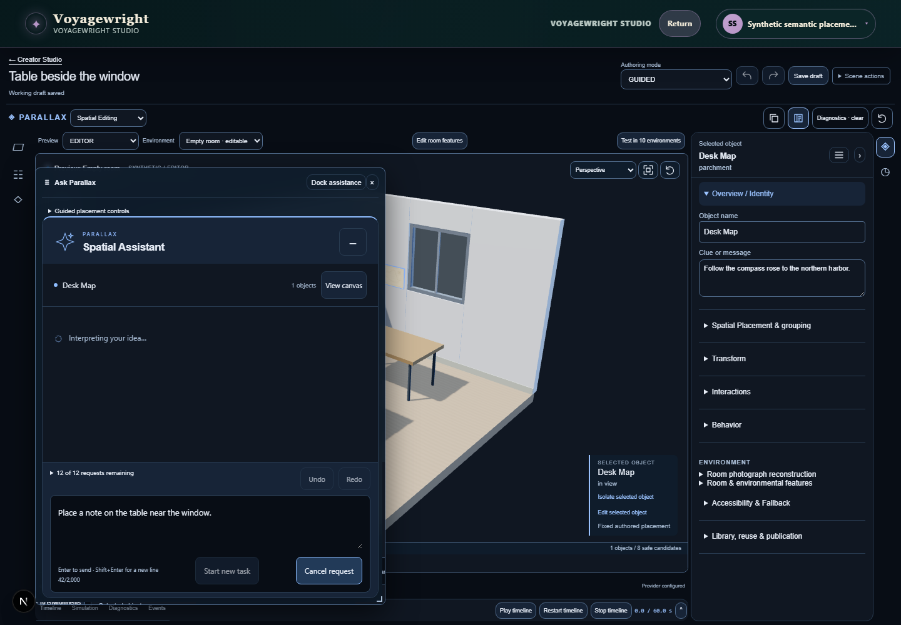
semantic-motion-switch-preserved-composer.png
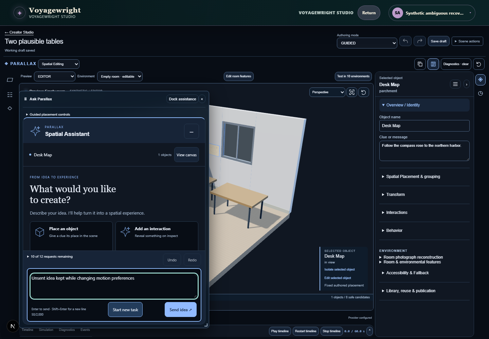
semantic-proposed-note-in-view.png
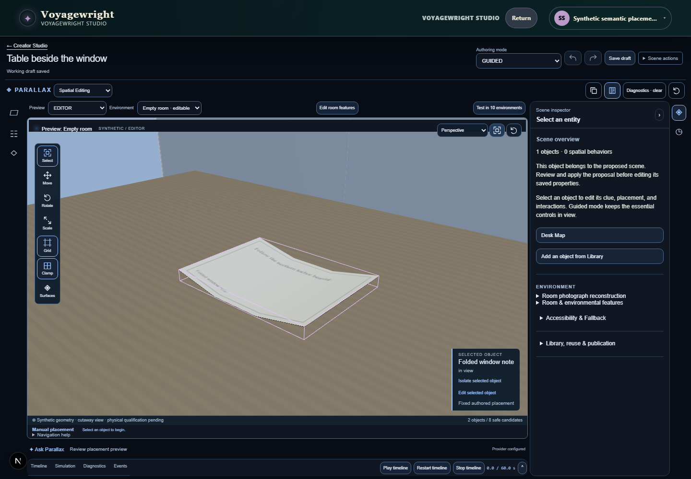
semantic-provider-failure.png
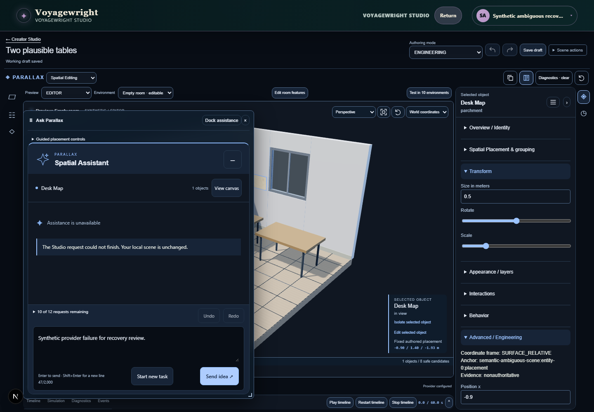
semantic-public-sign-in-reduced-motion.png
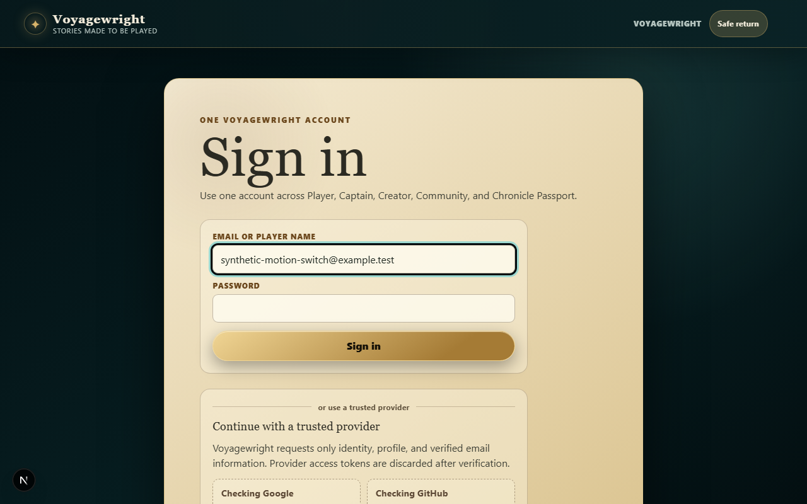
semantic-public-sign-in-restored-motion.png
semantic-reduced-motion-clarification.png
semantic-selected-detailed.png
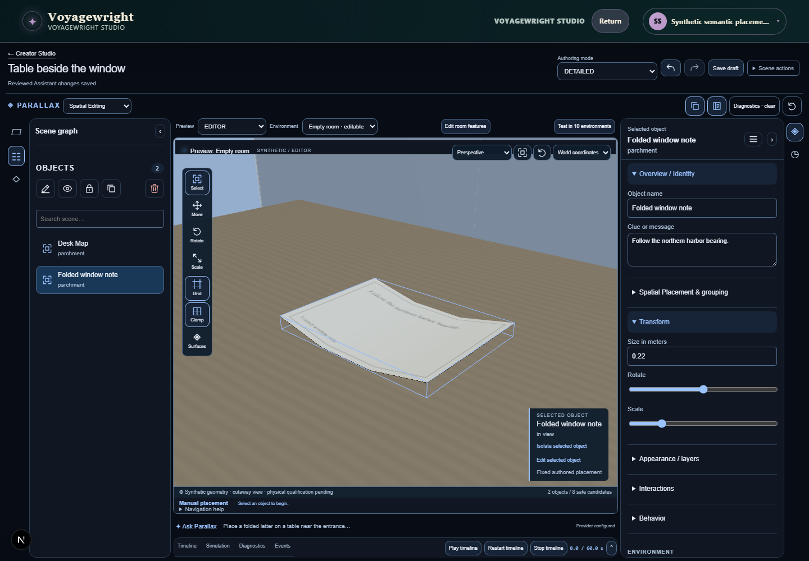
semantic-selected-engineering.png
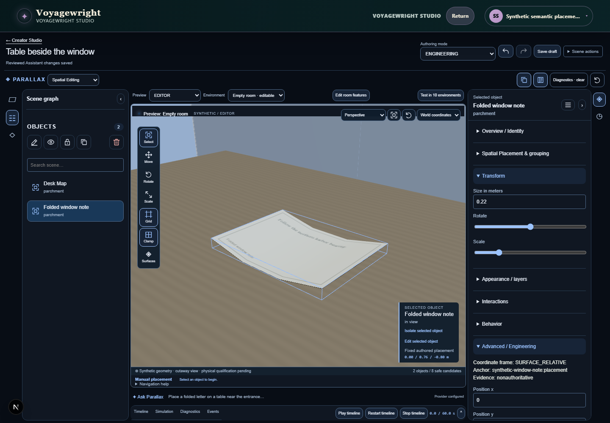
semantic-selected-guided.png
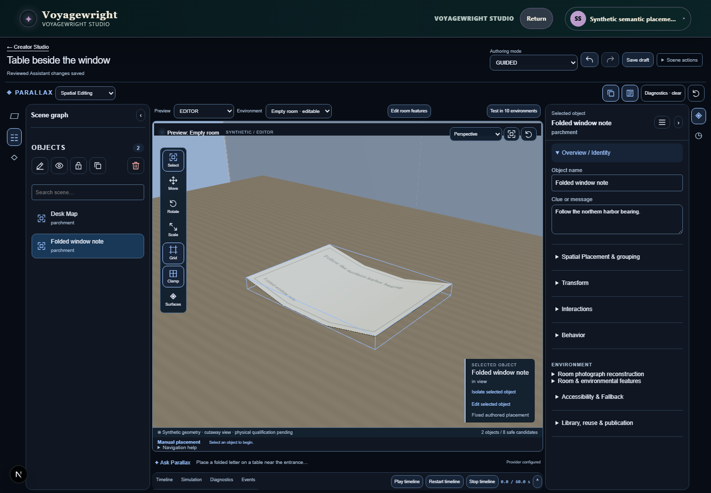